Chapter 4 NHANES: A New Sample
4.1 Creating A New Subset, Carefully
Suppose we wanted to select a new sample from the NHANES data, but now, we’ll have some additional requirements.
- We want to start by looking only at subjects whose Age is at least 21 and at most 79, so we avoid some of the problems we saw in the previous samples with children and adults being included together in a study of height, as well as the use of Age = 80 for all subjects ages 80 and older.
- We want to look at some of the additional variables available in the NHANES data.
IDandSurveyYrto identify the participants and the survey period for each response.Ageas we’ve seen before, in years.Heightas we’ve seen before, in centimeters.Genderwhich we’ll rename asSexagain.Pulse= 60 second pulse rate (in beats per minute).BPSysAve= Systolic Blood Pressure, in mm Hg (and we’ll rename thisSBP).SleepTrouble= Yes means the subject has told a health professional that they had trouble sleeping.PhysActive= Yes means the subject does moderate or vigorous-intensity sports, fitness or recreational activity.MaritalStatus= one of Married, Widowed, Divorced, Separated, NeverMarried or LivePartner (living with partner.)HealthGen= self-reported rating of general health, one of Excellent, Vgood (Very Good), Good, Fair or Poor.
- Next, we’ll deal with missing data by omitting from our sample any subjects with missingness on any of the variables we’ve selected.
- Next, we only want to include unique subjects, with distinct values across the variables we are interested in. (The original
NHANESdata frame contains numerous repeated rows, where individuals from under-represented sociodemographic groups are included several times so as to mirror the characteristics of the US population in 2009-10 and 2011-12 more closely.)
Once we’ve identified the complete set of responses that meet the four requirements above, we will then take a random sample of 1,000 observations, without replacement, from that group.
Can you see how the code below accomplishes these tasks?
set.seed(431004)
nh_4 <- NHANES %>%
filter(Age > 20 & Age < 80) %>%
select(ID, SurveyYr, Gender, Age, Height,
Pulse, BPSysAve, SleepTrouble, PhysActive,
MaritalStatus, HealthGen) %>%
rename(Sex = Gender, SBP = BPSysAve) %>%
filter(complete.cases(.)) %>%
distinct() %>%
slice_sample(n = 1000, replace = FALSE)
nh_4# A tibble: 1,000 x 11
ID SurveyYr Sex Age Height Pulse SBP SleepTrouble PhysActive
<int> <fct> <fct> <int> <dbl> <int> <int> <fct> <fct>
1 54401 2009_10 male 52 171. 100 106 Yes No
2 52249 2009_10 male 43 190. 78 120 Yes No
3 63461 2011_12 female 21 161 86 111 Yes Yes
4 68429 2011_12 male 27 190. 86 113 No Yes
5 52661 2009_10 male 71 170. 66 120 No No
6 55949 2009_10 female 78 160. 58 157 Yes No
7 53913 2009_10 female 75 161. 58 124 No No
8 63852 2011_12 male 50 174. 50 104 No No
9 68833 2011_12 male 41 160. 62 116 No No
10 61941 2009_10 male 22 172 88 112 Yes No
# ... with 990 more rows, and 2 more variables: MaritalStatus <fct>,
# HealthGen <fct>4.2 Numerical Summary of nh_4
summary(nh_4) ID SurveyYr Sex Age Height
Min. :51630 2009_10:516 female:495 Min. :21.00 Min. :144.2
1st Qu.:56374 2011_12:484 male :505 1st Qu.:34.00 1st Qu.:161.5
Median :61578 Median :47.00 Median :168.4
Mean :61669 Mean :47.27 Mean :168.8
3rd Qu.:66927 3rd Qu.:60.00 3rd Qu.:176.1
Max. :71915 Max. :79.00 Max. :199.6
Pulse SBP SleepTrouble PhysActive MaritalStatus
Min. : 44.00 Min. : 80.0 No :733 No :489 Divorced :120
1st Qu.: 64.00 1st Qu.:109.0 Yes:267 Yes:511 LivePartner : 83
Median : 72.00 Median :119.0 Married :527
Mean : 72.66 Mean :120.9 NeverMarried:183
3rd Qu.: 80.00 3rd Qu.:129.2 Separated : 34
Max. :128.00 Max. :196.0 Widowed : 53
HealthGen
Excellent:103
Vgood :264
Good :430
Fair :163
Poor : 40
4.3 Distribution of Heights
What is the distribution of height in this new sample?
ggplot(data = nh_4, aes(x = Height)) +
geom_histogram() `stat_bin()` using `bins = 30`. Pick better value with `binwidth`.
We can do several things to clean this up.
- We’ll change the color of the lines for each bar of the histogram.
- We’ll change the fill inside each bar to make them stand out a bit more.
- We’ll add a title and relabel the horizontal (x) axis to include the units of measurement.
- We’ll avoid the warning by selecting a number of bins (we’ll use 25 here) into which we’ll group the heights before drawing the histogram.
ggplot(data = nh_4, aes(x = Height)) +
geom_histogram(bins = 25, col = "yellow", fill = "blue") +
labs(title = "Height of NHANES subjects ages 21-79",
x = "Height in cm.")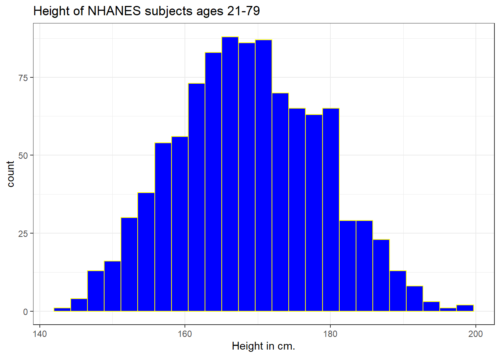
4.3.1 Changing a Histogram’s Fill and Color
The CWRU color guide (https://case.edu/umc/our-brand/visual-guidelines/) lists the HTML color schemes for CWRU blue and CWRU gray. Let’s match that color scheme.
cwru.blue <- '#0a304e'
cwru.gray <- '#626262'
ggplot(data = nh_4, aes(x = Height)) +
geom_histogram(binwidth = 2, col = cwru.gray, fill = cwru.blue) +
labs(title = "Height of NHANES subjects ages 21-79",
x = "Height in cm.") +
theme_bw()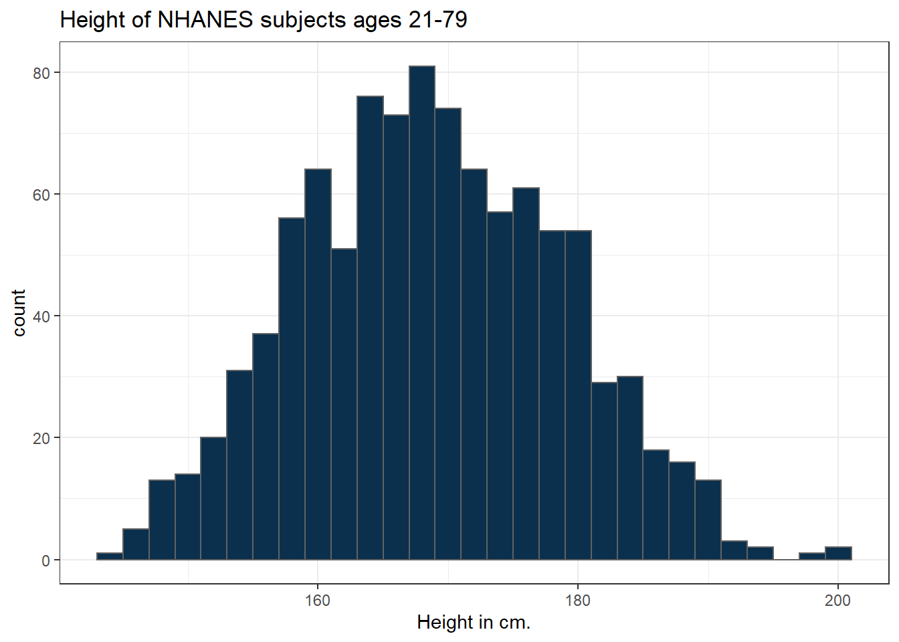
Note the other changes to the graph above.
- We changed the theme to replace the gray background.
- We changed the bins for the histogram, to gather observations into groups of 2 cm. each.
4.4 Height and Sex
ggplot(data = nh_4, aes(x = Sex, y = Height, color = Sex)) +
geom_point() +
labs(title = "Height by Sex for NHANES subjects ages 21-79",
y = "Height in cm.")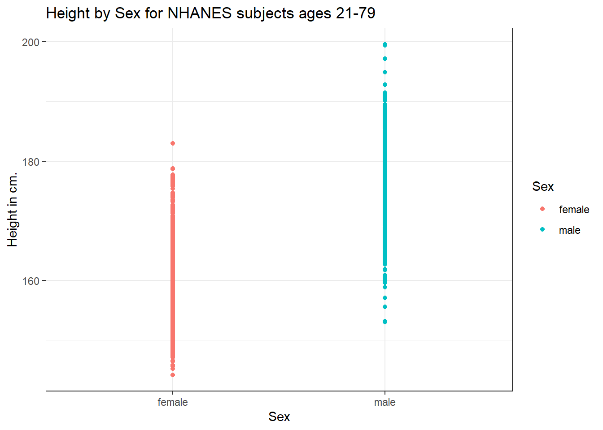
This plot isn’t so useful. We can improve things a little by jittering the points horizontally, so that the overlap is reduced.
ggplot(data = nh_4, aes(x = Sex, y = Height, color = Sex)) +
geom_jitter(width = 0.2) +
labs(title = "Height by Sex (jittered) for NHANES subjects ages 21-79",
y = "Height in cm.")
Perhaps it might be better to summarise the distribution in a different way. We might consider a boxplot of the data.
4.4.1 A Boxplot of Height by Sex
ggplot(data = nh_4, aes(x = Sex, y = Height, fill = Sex)) +
geom_boxplot() +
labs(title = "Boxplot of Height by Sex for NHANES subjects ages 21-79",
y = "Height in cm.")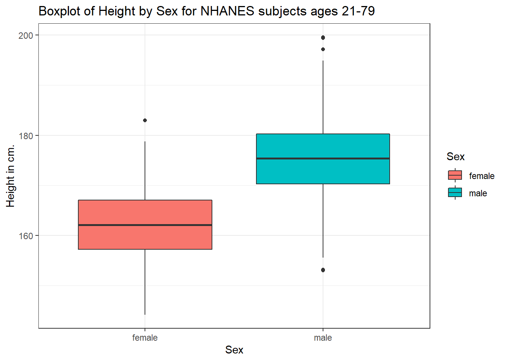
Or perhaps we’d like to see a pair of histograms?
4.4.2 Histograms of Height by Sex
ggplot(data = nh_4, aes(x = Height, fill = Sex)) +
geom_histogram(color = "white", bins = 20) +
labs(title = "Histogram of Height by Sex for NHANES subjects ages 21-79",
x = "Height in cm.") +
facet_wrap(~ Sex)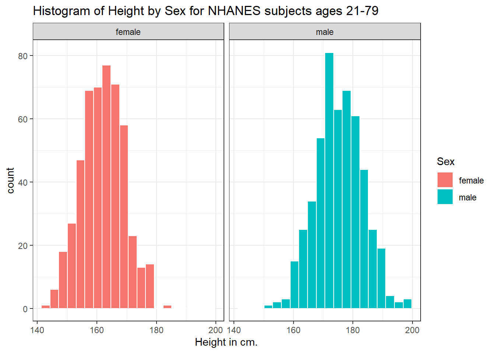
Can we redraw these histograms so that they are a little more comparable, and to get rid of the unnecessary legend?
ggplot(data = nh_4, aes(x = Height, fill = Sex)) +
geom_histogram(color = "white", bins = 20) +
labs(title = "Histogram of Height by Sex for NHANES subjects ages 21-79 (Revised)",
x = "Height in cm.") +
guides(fill = "none") +
facet_grid(Sex ~ .)
4.5 Looking at Pulse Rate
Let’s look at a different outcome, the pulse rate for our subjects.
Here’s a histogram, again with CWRU colors, for the pulse rates in our sample.
ggplot(data = nh_4, aes(x = Pulse)) +
geom_histogram(binwidth = 1, fill = cwru.blue, col = cwru.gray) +
labs(title = "Histogram of Pulse Rate: NHANES subjects ages 21-79",
x = "Pulse Rate (beats per minute)")
Suppose we instead bin up groups of 5 beats per minute together as we plot the Pulse rates.
ggplot(data = nh_4, aes(x = Pulse)) +
geom_histogram(binwidth = 5, fill = cwru.blue, col = cwru.gray) +
labs(title = "Histogram of Pulse Rate: NHANES subjects ages 21-79",
x = "Pulse Rate (beats per minute)")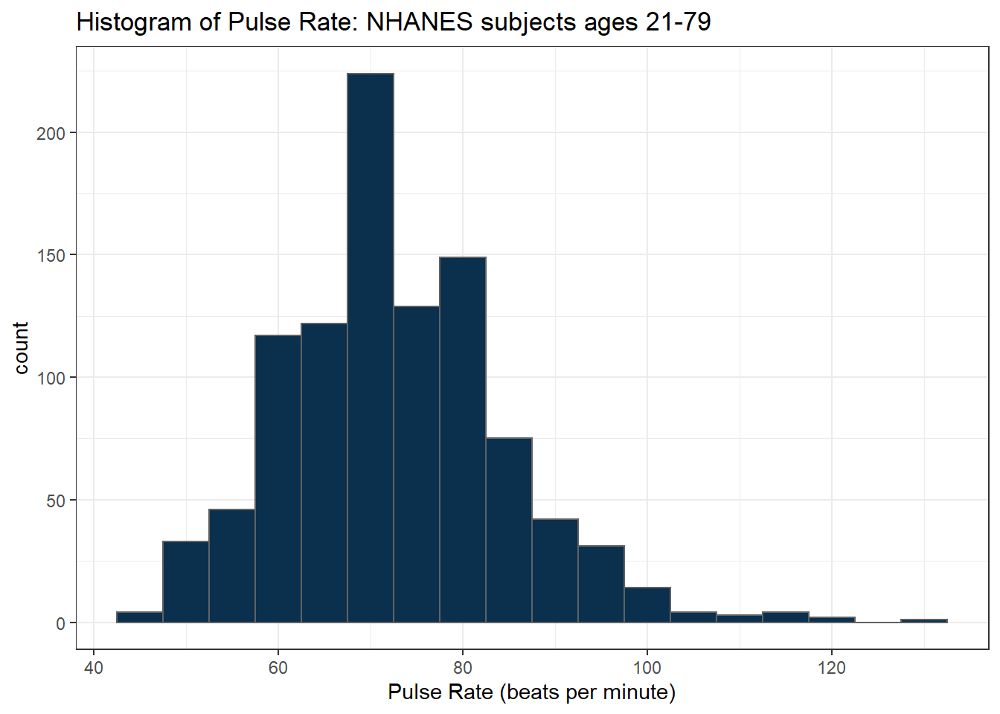
Which is the more useful representation will depend a lot on what questions you’re trying to answer.
4.5.1 Pulse Rate and Physical Activity
We can also split up our data into groups based on whether the subjects are physically active. Let’s try a boxplot.
ggplot(data = nh_4, aes(y = Pulse, x = PhysActive, fill = PhysActive)) +
geom_boxplot() +
labs(title = "Pulse Rate by Physical Activity Status for NHANES ages 21-79")
As an accompanying numerical summary, we might ask how many people fall into each of these PhysActive categories, and what is their “average” Pulse rate.
nh_4 %>%
group_by(PhysActive) %>%
summarise(count = n(), mean(Pulse), median(Pulse)) %>%
knitr::kable(digits = 2) | PhysActive | count | mean(Pulse) | median(Pulse) |
|---|---|---|---|
| No | 489 | 73.36 | 72 |
| Yes | 511 | 71.98 | 72 |
The knitr::kable(digits = 2) piece of this command tells R Markdown to generate a table with some attractive formatting, and rounding any decimals to two figures.
4.5.2 Pulse by Sleeping Trouble
ggplot(data = nh_4, aes(x = Pulse, fill = SleepTrouble)) +
geom_histogram(color = "white", bins = 20) +
labs(title = "Histogram of Pulse Rate by Sleep Trouble for NHANES subjects ages 21-79",
x = "Pulse Rate (beats per minute)") +
guides(fill = "none") +
facet_grid(SleepTrouble ~ ., labeller = "label_both")
How many people fall into each of these SleepTrouble categories, and what is their “average” Pulse rate?
nh_4 %>%
group_by(SleepTrouble) %>%
summarise(count = n(), mean(Pulse), median(Pulse)) %>%
knitr::kable(digits = 2) | SleepTrouble | count | mean(Pulse) | median(Pulse) |
|---|---|---|---|
| No | 733 | 72.41 | 72 |
| Yes | 267 | 73.32 | 72 |
4.5.3 Pulse and HealthGen
We can compare the distribution of Pulse rate across groups by the subject’s self-reported overall health (HealthGen), as well.
ggplot(data = nh_4, aes(x = HealthGen, y = Pulse, fill = HealthGen)) +
geom_boxplot() +
labs(title = "Pulse by Self-Reported Overall Health for NHANES ages 21-79",
x = "Self-Reported Overall Health", y = "Pulse Rate") +
guides(fill = "none") 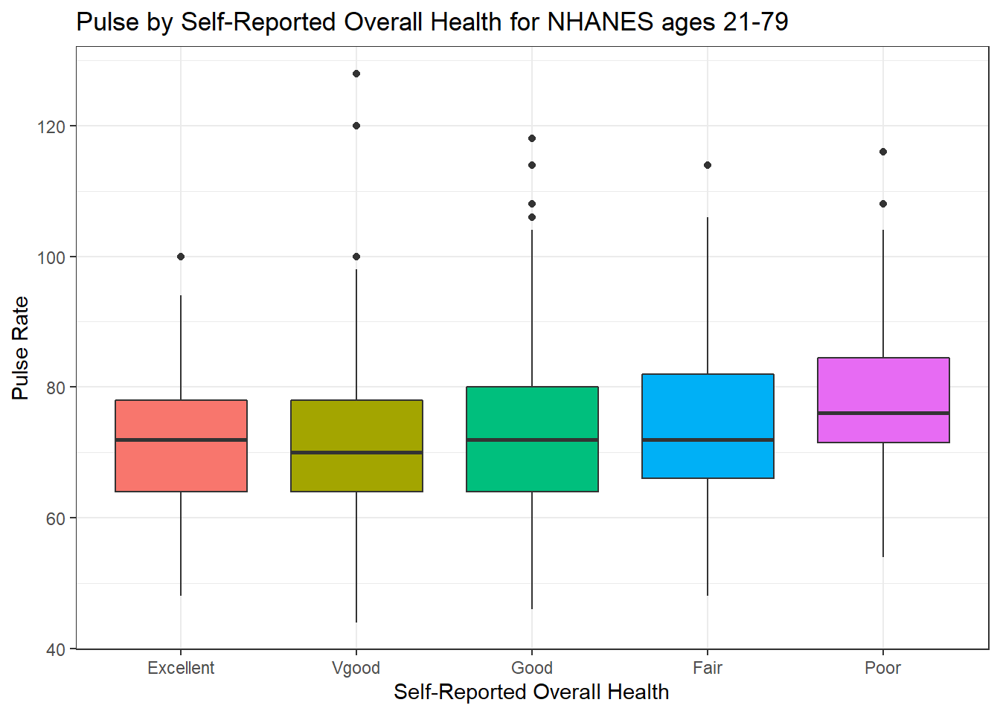
How many people fall into each of these HealthGen categories, and what is their “average” Pulse rate?
nh_4 %>%
group_by(HealthGen) %>%
summarise(count = n(), mean(Pulse), median(Pulse)) %>%
knitr::kable(digits = 2) | HealthGen | count | mean(Pulse) | median(Pulse) |
|---|---|---|---|
| Excellent | 103 | 71.30 | 72 |
| Vgood | 264 | 71.15 | 70 |
| Good | 430 | 72.70 | 72 |
| Fair | 163 | 74.23 | 72 |
| Poor | 40 | 79.15 | 76 |
4.5.4 Pulse Rate and Systolic Blood Pressure
ggplot(data = nh_4, aes(x = SBP, y = Pulse)) +
geom_point() +
geom_smooth(method = "loess", formula = y ~ x) +
labs(title = "Pulse Rate vs. SBP for NHANES subjects, ages 21-79")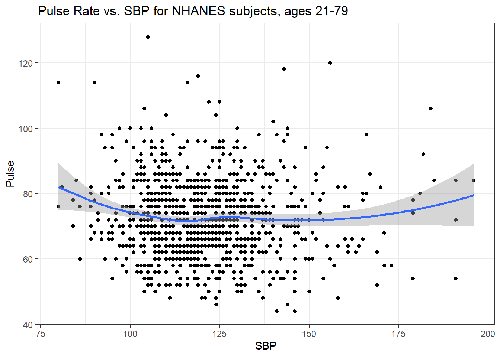
4.5.5 Sleep Trouble vs. No Sleep Trouble?
Could we see whether subjects who have described SleepTrouble show different SBP-pulse rate patterns than the subjects who haven’t?
- Let’s try doing this by changing the shape and the color of the points based on
SleepTrouble.
ggplot(data = nh_4,
aes(x = SBP, y = Pulse,
color = SleepTrouble, shape = SleepTrouble)) +
geom_point() +
geom_smooth(method = "loess", formula = y ~ x) +
labs(title = "Pulse Rate vs. SBP for NHANES subjects, ages 21-79")
This plot might be easier to interpret if we faceted by SleepTrouble, as well.
ggplot(data = nh_4,
aes(x = SBP, y = Pulse,
color = SleepTrouble, shape = SleepTrouble)) +
geom_point() +
geom_smooth(method = "loess", formula = y ~ x) +
labs(title = "Pulse Rate vs. SBP for NHANES subjects, ages 21-79") +
facet_wrap(~ SleepTrouble, labeller = "label_both")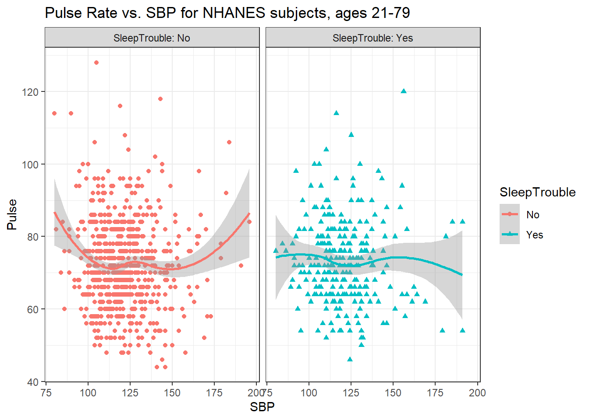
4.6 General Health Status
Here’s a Table of the General Health Status results. Again, this is a self-reported rating of each subject’s health on a five point scale (Excellent, Very Good, Good, Fair, Poor.)
nh_4 %>%
tabyl(HealthGen) HealthGen n percent
Excellent 103 0.103
Vgood 264 0.264
Good 430 0.430
Fair 163 0.163
Poor 40 0.040The HealthGen data are categorical, which means that summarizing them with averages isn’t as appealing as looking at percentages, proportions and rates.
Another, somewhat simpler way to get a table of this sort of information uses the tabyl function from the janitor package in R.
# tabyl is part of the janitor package
# already loaded: library(janitor)
nh_4 %>%
tabyl(HealthGen) HealthGen n percent
Excellent 103 0.103
Vgood 264 0.264
Good 430 0.430
Fair 163 0.163
Poor 40 0.040I don’t actually like the title of percent here, as it’s really a proportion, but that can be adjusted, and we can add a total.
nh_4 %>%
tabyl(HealthGen) %>%
adorn_totals() %>%
adorn_pct_formatting() HealthGen n percent
Excellent 103 10.3%
Vgood 264 26.4%
Good 430 43.0%
Fair 163 16.3%
Poor 40 4.0%
Total 1000 100.0%When working with an unordered categorical variable, like MaritalStatus, the same approach can work.
nh_4 %>%
tabyl(MaritalStatus) %>%
adorn_totals() %>%
adorn_pct_formatting() MaritalStatus n percent
Divorced 120 12.0%
LivePartner 83 8.3%
Married 527 52.7%
NeverMarried 183 18.3%
Separated 34 3.4%
Widowed 53 5.3%
Total 1000 100.0%4.6.1 Bar Chart for Categorical Data
Usually, a bar chart is the best choice for a graphing a variable made up of categories.
ggplot(data = nh_4, aes(x = HealthGen)) +
geom_bar()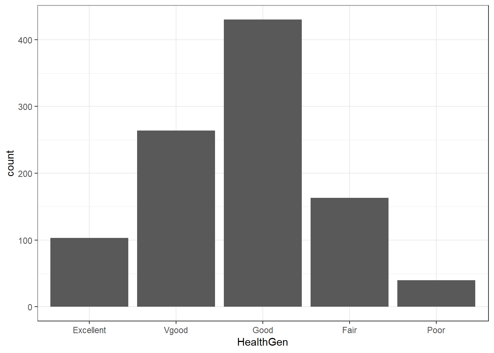
There are lots of things we can do to make this plot fancier.
ggplot(data = nh_4, aes(x = HealthGen, fill = HealthGen)) +
geom_bar() +
guides(fill = "none") +
labs(x = "Self-Reported Health Status",
y = "Number of NHANES subjects",
title = "Self-Reported Health Status in NHANES subjects ages 21-79")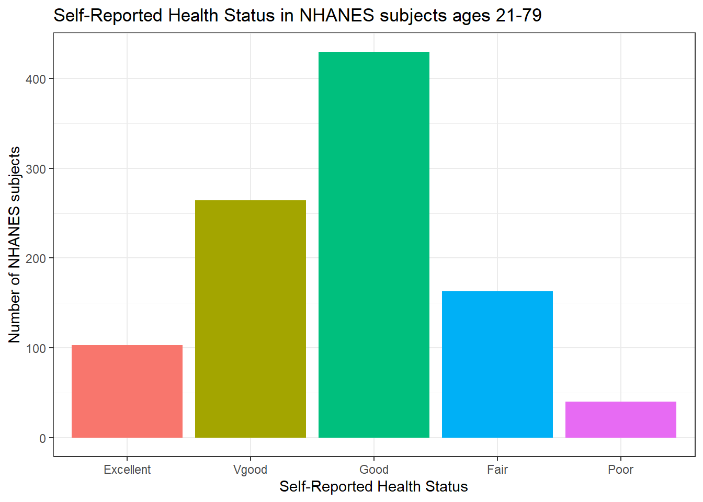
Or, we can really go crazy…
nh_4 %>%
count(HealthGen) %>%
mutate(pct = round(prop.table(n) * 100, 1)) %>%
ggplot(aes(x = HealthGen, y = pct, fill = HealthGen)) +
geom_bar(stat = "identity", position = "dodge") +
scale_fill_viridis_d() +
guides(fill = "none") +
geom_text(aes(y = pct + 1, # nudge above top of bar
label = paste0(pct, '%')), # prettify
position = position_dodge(width = .9),
size = 4) +
labs(x = "Self-Reported Health Status",
y = "Percentage of NHANES subjects",
title = "Self-Reported Health Status in NHANES subjects ages 21-79") +
theme_bw()
4.6.2 Working with Tables
We can add both row and column marginal totals, and compare subjects by Sex, as follows…
nh_4 %>%
tabyl(Sex, HealthGen) %>%
adorn_totals(c("row", "col")) Sex Excellent Vgood Good Fair Poor Total
female 54 132 205 81 23 495
male 49 132 225 82 17 505
Total 103 264 430 163 40 1000If we like, we can make this look a little more polished with the knitr::kable function…
nh_4 %>%
tabyl(Sex, HealthGen) %>%
adorn_totals(c("row", "col")) %>%
knitr::kable()| Sex | Excellent | Vgood | Good | Fair | Poor | Total |
|---|---|---|---|---|---|---|
| female | 54 | 132 | 205 | 81 | 23 | 495 |
| male | 49 | 132 | 225 | 82 | 17 | 505 |
| Total | 103 | 264 | 430 | 163 | 40 | 1000 |
Or, we can get a complete cross-tabulation, including (in this case) the percentages of people within each Sex that fall in each HealthGen category (percentages within each row) like this.
nh_4 %>%
tabyl(Sex, HealthGen) %>%
adorn_totals("row") %>%
adorn_percentages("row") %>%
adorn_pct_formatting() %>%
adorn_ns() %>%
knitr::kable()| Sex | Excellent | Vgood | Good | Fair | Poor |
|---|---|---|---|---|---|
| female | 10.9% (54) | 26.7% (132) | 41.4% (205) | 16.4% (81) | 4.6% (23) |
| male | 9.7% (49) | 26.1% (132) | 44.6% (225) | 16.2% (82) | 3.4% (17) |
| Total | 10.3% (103) | 26.4% (264) | 43.0% (430) | 16.3% (163) | 4.0% (40) |
And, if we wanted the column percentages, to determine which sex had the higher rate of each HealthGen status level, we can get that by changing the adorn_percentages to describe results at the column level:
nh_4 %>%
tabyl(Sex, HealthGen) %>%
adorn_totals("col") %>%
adorn_percentages("col") %>%
adorn_pct_formatting() %>%
adorn_ns() %>%
knitr::kable()| Sex | Excellent | Vgood | Good | Fair | Poor | Total |
|---|---|---|---|---|---|---|
| female | 52.4% (54) | 50.0% (132) | 47.7% (205) | 49.7% (81) | 57.5% (23) | 49.5% (495) |
| male | 47.6% (49) | 50.0% (132) | 52.3% (225) | 50.3% (82) | 42.5% (17) | 50.5% (505) |
4.6.3 SBP by General Health Status
Let’s consider now the relationship between self-reported overall health and systolic blood pressure.
ggplot(data = nh_4, aes(x = HealthGen, y = SBP, fill = HealthGen)) +
geom_boxplot() +
labs(title = "SBP by Health Status, Overall Health for NHANES ages 21-79",
y = "Systolic Blood Pressure", x = "Self-Reported Overall Health") +
guides(fill = "none") 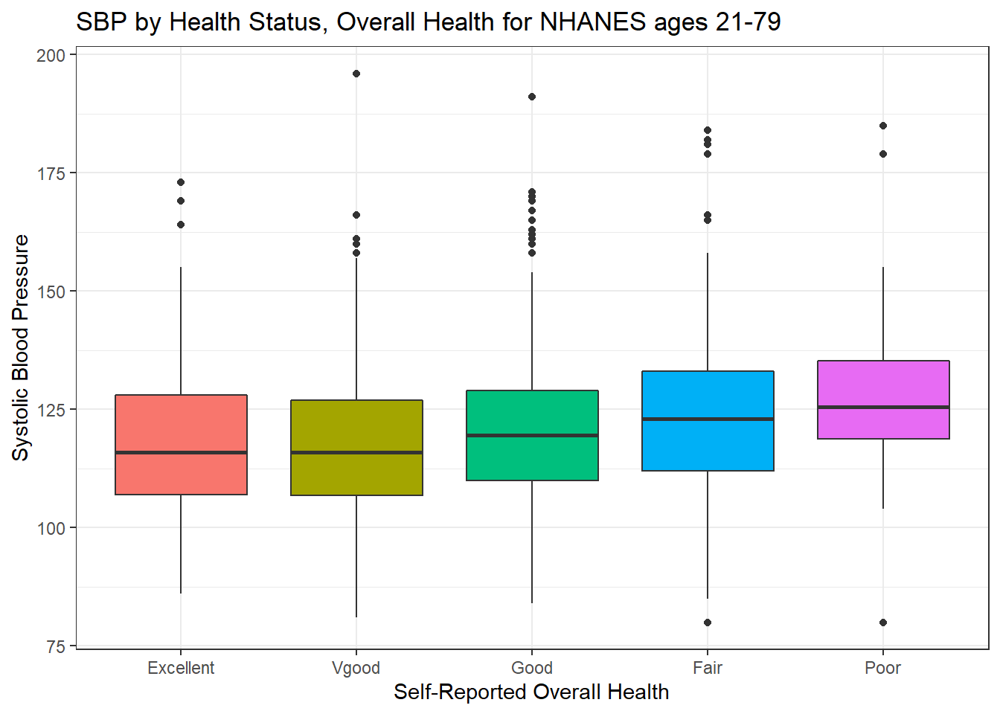
We can see that not too many people self-identify with the “Poor” health category.
nh_4 %>%
group_by(HealthGen) %>%
summarise(count = n(), mean(SBP), median(SBP)) %>%
knitr::kable() | HealthGen | count | mean(SBP) | median(SBP) |
|---|---|---|---|
| Excellent | 103 | 118.4854 | 116.0 |
| Vgood | 264 | 118.1250 | 116.0 |
| Good | 430 | 121.2209 | 119.5 |
| Fair | 163 | 124.1840 | 123.0 |
| Poor | 40 | 129.6000 | 125.5 |
4.6.4 SBP by Physical Activity and General Health Status
We’ll build a panel of boxplots to try to understand the relationships between Systolic Blood Pressure, General Health Status and Physical Activity. Note the use of coord_flip to rotate the graph 90 degrees, and the use of labeller within facet_wrap to include both the name of the (Physical Activity) variable and its value.
ggplot(data = nh_4, aes(x = HealthGen, y = SBP, fill = HealthGen)) +
geom_boxplot() +
labs(title = "SBP by Health Status, Overall Health for NHANES ages 21-79",
y = "Systolic BP", x = "Self-Reported Overall Health") +
guides(fill = "none") +
facet_wrap(~ PhysActive, labeller = "label_both") +
coord_flip()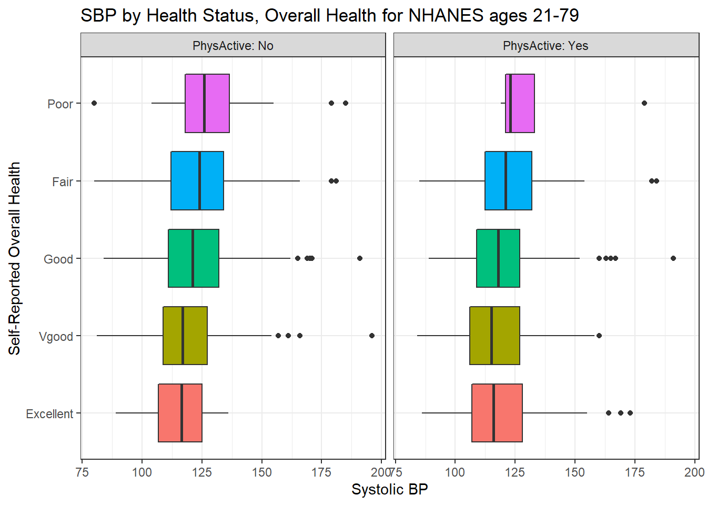
4.6.5 SBP by Sleep Trouble and General Health Status
Here’s a plot of faceted histograms, which might be used to address similar questions related to the relationship between Overall Health, Systolic Blood Pressure and Sex.
ggplot(data = nh_4, aes(x = SBP, fill = Sex)) +
geom_histogram(color = "white", bins = 20) +
labs(title = "SBP by Sex, Overall Health for NHANES ages 21-79",
x = "Systolic BP") +
guides(fill = "none") +
facet_grid(HealthGen ~ Sex)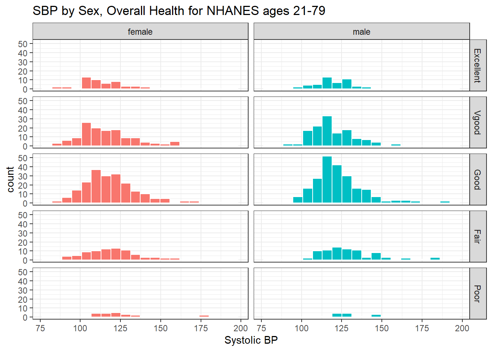
4.7 Conclusions
This is just a small piece of the toolbox for visualizations that we’ll create in this class. Many additional tools are on the way, but the main idea won’t change. Using the ggplot2 package, we can accomplish several critical tasks in creating a visualization, including:
- Identifying (and labeling) the axes and titles
- Identifying a type of
geomto use, like a point, bar or histogram - Changing fill, color, shape, size to facilitate comparisons
- Building “small multiples” of plots with faceting
Good data visualizations make it easy to see the data, and ggplot2’s tools make it relatively difficult to make a really bad graph.